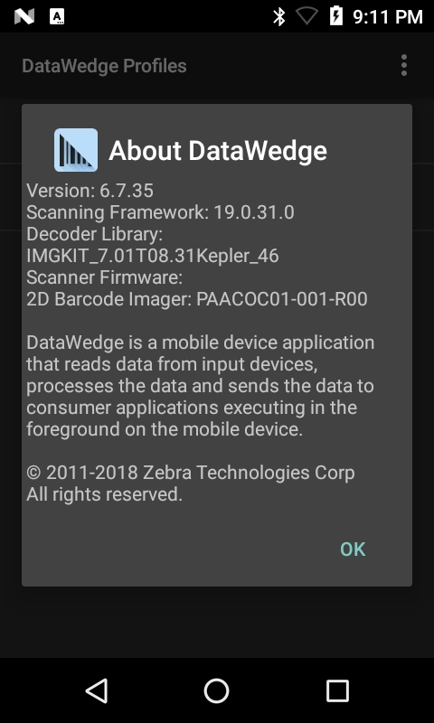

概述
DataWedge 为设备上的任何应用程序提供从各种输入源（如条码扫描器、MSR、RFID、语音和串行端口）获取数据并在需要时根据简单选项或复杂规则操作数据的能力。DataWedge 在每台 Zebra Android 设备上均是开箱即用，并可轻松配置为在任何特定应用程序中自动提供数据采集服务，使用特定扫描器、读取器或其他外围设备，以及将数据正确格式化并传输到正确的应用程序。
采集数据的方法有两种：
- DataWedge“零代码”方法，通过使用从用户界面配置的 DataWedge 配置文件来捕获和处理数据，无需进行任何编程或应用程序修改。
- 使用 DataWedge API 可通过 Android Intent 以编程的方式控制、修改和查询 DataWedge 配置设置和操作。这样就可以轻松修改新的或现有的 Android 应用程序来使用 Zebra 设备采集数据，而无需担心底层硬件。
请按照使用入门指南操作，其中讨论了两种方法，并包括关于常见用例和最佳实践的程序员指南。
要了解有关 DataWedge API 的更多信息，请阅读由 Zebra 工程师 Darryn Campbell 编著的 DataWedge API - 优势和使用场景。
转到“新增功能”部分
主要功能
DataWedge 提供以下主要功能和选项（功能可用性可能因版本而异 - 请参阅版本历史记录）：
数据采集
- 扫描和处理所有主要条码码制
- 使用现有应用程序获取条码、图像、文本、电话号码、磁条和其他数据
- 设置 DataWedge 以获取一个或多个应用程序的扫描数据
- 使用 RFID 输入读取 RFID（无线射频识别）标签
- 使用语音捕获功能通过语音输入获取数据
- 使用磁条读取器 (MSR) 采集数据
- 使用 SimulScan 在单一扫描中获取多种类型的数据
- 使用 Data Capture Plus 将设备屏幕区域指定为扫描触发器
- 创建配置文件以实施个别应用程序的 DataWedge 功能
- 配置 DataWedge 以自动使用外部 Zebra 外围设备进行扫描：
数据处理
部署
注意：DataWedge 功能的可用性和操作因设备和操作系统（它们决定了设备上安装的 DataWedge 版本）而异。
准备好开始了吗？转到 DataWedge 设置指南。
多用户支持
DataWedge 支持在单个设备上使用多个 Android 用户帐户，从而允许使用独立的用户配置文件来维护数据隐私。支持的 Zebra 设备包括：
- Android Oreo：TC52/TC57、TC72/TC77
特性和功能：
- 如果启用了 DataWedge，其功能仅适用于活动用户 - 每个用户都有独立的 DataWedge 进程运行。DataWedge 的使用和功能仅适用于活动用户。
- 任何 DataWedge 配置文件更改都将在所有用户之间全局生效 - 用户进行的 DataWedge 配置或配置文件更改（通过 DataWedge UI 或配置文件导入）将应用于所有用户，无论进行更改时登录的是哪位用户。例如，如果用户 A 对某个配置文件进行了更改，则用户 B 将在同一配置文件中看到该更改。配置文件存储在一个位置（默认为 /enterprise/device/settings/datawedge/config/datawedge.db）中，所有用户的 DataWedge 进程都使用这一相同的配置文件。
- 摄像头扫描功能仅适用于主要（管理员）用户 - 摄像头扫描不适用于辅助（非主要）用户。
- 在主要用户和其他用户之间切换时，蓝牙扫描器会断开连接 - 这适用于启用了蓝牙扫描器的配置文件。如果主要用户处于活动状态，当切换到使用活动配置文件且其中也启用了蓝牙扫描器的其他用户时，蓝牙扫描器会断开连接，且不会自动重新连接至设备。非主要用户需要按下 Zebra 蓝牙扫描器上的重置按钮才能重新连接，即使显示蓝牙扫描器已连接至设备也不例外。
- 不能访问外部 SD 卡 - 如果存在多个 Android 用户帐户，则用户不能访问外部 SD 卡。因此无法通过 SD 卡导出或导入 Datawedge 配置数据库文件。
- 文件夹访问受限 - 每个用户配置文件都有自己的文件夹结构，其他用户不能访问。因此，用户无法访问其他用户导出的 DataWedge 配置数据库，从而无法跨用户导入/导出配置。
支持的语言
DataWedge 已获批准在针对下列语言本地化的设备操作系统上运行：
- 英语
- 法语
- 德语
- 意大利语
- 西班牙语
- 简体中文
- 繁体中文
有关已批准语言或下载本地化操作系统的更多信息，请联系 Zebra 技术支持。
DataWedge 7.4 中的新功能
- DataWedge 7.4 及更高版本仅支持 Android Oreo (v8.0) 及更高版本。
- 引入了通过 PTT（通话按键）按钮激活语音捕获的功能，并提供新的数据采集开始选项。
- 添加了对条码读取器和 SetConfig API 的新 DPM 支持。
- 未来，将可以在 DataWedge 配置文件屏幕中看到 Enterprise Keyboard 选项。
- 将会弃用对唯一设备标识 (UDI) 条码的支持，例如 GS1、HIBCC 和 ICCBBA – UDI 仅在最高 Android P（9.x 版）的选定 Zebra 设备上受支持。
最近版本历史记录
DataWedge 7.3 新增功能
- 增加了对新 Grid Matrix 解码器的支持。
- 使用 SetConfig API 设置 Grid Matrix 解码器参数。
- 增加了新的解码器签名功能，用于将特殊格式化区域（例如签名）捕获为图像。
- 新的签名采集示例应用程序。
- 为按键输出增加了新的键事件选项。
- 可以使用 SetConfig API 切换按键输出参数。
- 增加了后置摄像头支持用于 Digimarc 解码。
- DS8178 蓝牙扫描器现在受支持。
- 支持 I2of5 的新 Febraban 解码器参数。
- 用于多条码扫描模式的新即时报告参数。
- DataWedge 7.3.22 中的新功能：用于读取 RFID 标签的新 RFID 输入插件功能。
DataWedge 7.2 新增功能
- 为解码屏幕时间和透明度级别增加了新的解码屏幕通知参数。
- 增加了新的 DotCode 解码器支持。
DataWedge 7.1 新增功能
- 为扫描参数中的解码反馈增加了新的解码屏幕通知支持。
- 用于语音转数据采集的语音输入已正式发布（非 Beta 版）。
- 用于语音输入的新结束检测超时选项。
- 针对多个 Android 用户配置文件新多用户支持。
- 用于多个插件的新 SEND_RESULT 结果代码。
- 新的硬件触发器功能，用于切换条码输入和 Simulscan 输入的硬件触发器。
- 新的 Simulscan 触发器模式，用于以编程方式在 Simulscan 输入中切换硬件触发器
- 新的 SET_CONFIG/GET_CONFIG 参数，用于：
- Data Capture Plus (DCP)
- Simulscan
- 磁条读取器 (MSR)
- IP 输出
- 使用单个 Intent 的多个模块（完整配置文件）
- 用于 UDI 数据输出的新令牌
- 条码触发器模式，用于切换条码输入的硬件触发器模式
DataWedge 7.0 新增功能
新更新与 DataWedge 6.9 相同。
- 用于语音转数据捕获的新语音输入 (Beta)。
- 新的全局扫描器配置使通用扫描器配置可以应用于所有支持的扫描器。
- 新的字符集配置提供了用于通过解码器字符集对条码输入进行调整的选项。
- 更新的解码器选择现在支持：
- GS1 Datamatrix
- GS1 QRCode
- 增加了对 DS2278 蓝牙扫描器的支持。
其他更改
- 改进了 SET_CONFIG API 扫描器输入参数的布局。
DataWedge 6.9 新增功能
- 用于语音转数据捕获的新语音输入 (Beta)。
- 新的全局扫描器配置使通用扫描器配置可以应用于所有支持的扫描器。
- 新的字符集配置提供了用于通过解码器字符集对条码输入进行调整的选项。
- 更新的解码器选择现在支持：
- GS1 Datamatrix
- GS1 QRCode
- 增加了对 DS2278 蓝牙扫描器的支持。
其他更改
- 改进了 SET_CONFIG API 扫描器输入参数的布局。
6.8 新增功能
- 在连接和断开连接外部扫描器之后，扫描器自动切换行为现在可进行控制
- DataWedge 设置允许忽略已禁用的配置文件，以帮助始终保持完整功能
- 新的 SET_IGNORE_DISABLED_PROFILES API 可配置 DataWedge 以避免切换到未启用的配置文件。
- 新的 GET_IGNORE_DISABLED_PROFILES API 可返回 IGNORE_DISABLED_PROFILES 标记的状态。
- 更新的 SET_CONFIG API 现在支持：
- 高级数据格式
- Digimarc 解码
- 新的 SWITCH_SIMULSCAN_PARAMS API 可实现对 SimulScan 参数的运行时更改。
- 自动配置文件导入得到了增强，以提高可靠性并减少额外编码
其他更改
SimulScan 输入插件默认模板现在是“默认 - Barcode4.xml”
v6.7 新增功能
此版本只支持运行 Android Lollipop 和更高版本的设备。
支持多条码输入，可一次同时获取多个条码。
增强的字符间延时功能允许为所有字符或仅为多字节字符指定延迟。
AimType 现在支持按下并保持功能继续解码会话，直至光束计时器过期、条码被解码或读取被取消。
动态模板参数允许在使用 SimulScan 动态模板时指定用于在表单上解码的条码数量（从 1 到 99）。
新的 IMPORT_CONFIG API 允许使用 Intent 导入配置和配置文件设置文件。
v6.6 新增功能
新的串行输入选项允许 DataWedge 为连接到串行端口和用于获取数据的扫描器或其他设备指定通信参数。
导入报告显示已导入数据库和配置文件的结果，使管理员能够轻松识别源/目标差异，并作出调整以进行补偿。
新的 SET_REPORTING_OPTIONS API 提供对带多个 Intent 报告功能的控制。
SET_CONFIG API 现在支持多个带单一 Intent 操作的插件。
SWITCH_SCANNER API 现在支持使用新额外项的友好设备名称。
安装了哪个版本？
要确定设备上安装了哪个 DataWedge 版本：
1.在设备上，找到并轻触“启动器”屏幕或“应用程序抽屉”中的 DataWedge 图标： DataWedge 6.x 的启动器图标
DataWedge 6.x 的启动器图标
2.轻触“汉堡”菜单：将出现 DataWedge 菜单：
3.轻触“关于”。将出现“关于 DataWedge”屏幕。DataWedge 版本号在下面的图像中突出显示。请注意，还会显示扫描器框架版本。
 显示版本号的“关于 DataWedge”框
4.如果设备上的 DataWedge 版本与本指南不同，请返回到 Techdocs 平铺页面，并在 DataWedge 平铺页面中的下拉菜单选择相应的版本。
请访问 Zebra 支持网站并下载特定设备的集成商指南以供参考，这也可能会有所帮助。
相关指南：